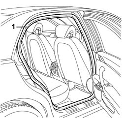

7010A34 Rear side DOOR HOUSING SEAL - R.R.
- Path
- Procedures > 70 FITTINGS > 7010 passenger compartment rear side doors > 7010A REAR SIDE DOORS ASSEMBLY > 7010A34 Rear side DOOR HOUSING SEAL - R.R.
- Kind
- repair procedure (removal / refitting; the operation number is the code)
- Applies to
- all engines; all production periods
- Interactive page
- https://sloeber94.github.io/elrnDB-lThss/en/#/80006
Applies to: all engines; all production periods
 Removing
Removing
 Refitting
RefittingSee in Op. 7050A20 Single rear seat cushion - R.R.
-
See in Op. 7040L44 RUNNING BOARD for REAR DOOR HOUSING (one) left or right - R.R.
1. Release the seal and remove it.

Applies to: all engines; all production periods
Refitting
Removing- Check that the seal is not cut or cracked.
- If it is not okay, replace the seal.
- Fit the seal in the housing, starting from the join at the front of the rear running board.
- Check that the seal adheres perfectly to the bodyshell profile.
See in Op. 7040L44 RUNNING BOARD for REAR DOOR HOUSING (one) left or right - R.R.